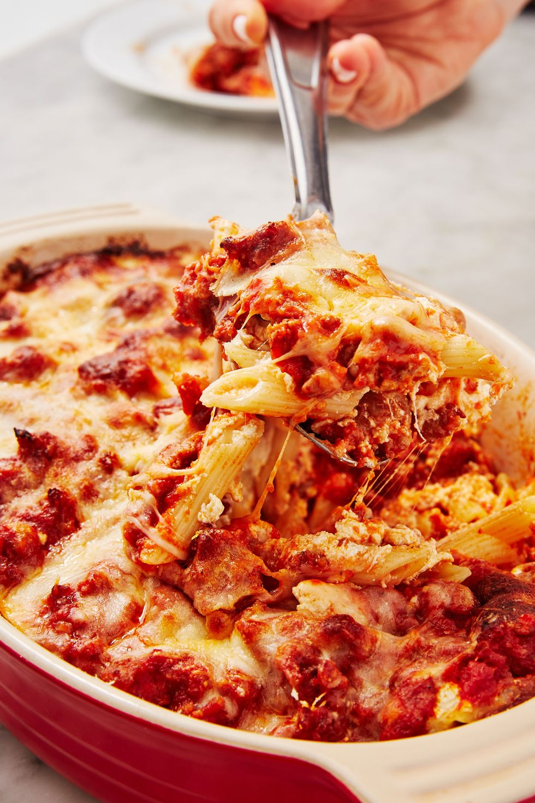

Baked mostaccioli recipe

Description
Mostaccioli is a hearty baked pasta that's perfect for a weeknight dinner. Essentially an easier lasagna made with penne. Top it with plenty of cheese and you'll soon have a new favorite to add to the rotation.
Ingredients
- 2 tbsp. extra-virgin olive oil
- 1 lb. sweet italian sausage, remove from casing
- 2 cloves garlic, minced
- 1/8 tsp. crushed red pepper flakes
- 1 (28-oz.) can whole peeled tomatoes, pulsed in a blender
- 1 sprig of fresh basil, plus more chopped for garnish
- Kosher salt
- Freshly ground black pepper
- 8 oz. Penne pasta
- 1 large egg
- 1 c. ricotta
- 1/2 c. freshly grated Parmesan, divided
- 1 1/2 c. shredded mozzarella, divided
Directions
- Preheat oven to 450°. In a medium saucepan over medium heat, heat oil. Add sausage and cook, breaking up into small pieces with a wooden spoon, until golden, about 8 minutes. Add garlic and red pepper flakes to sausage and cook, stirring until fragrant, about 30 seconds.
- Stir in tomatoes and basil and bring to a boil. Reduce to a simmer, and cook, stirring occasionally until sauce is thickened slightly, about 15 minutes. Season with salt and pepper. Remove from heat.
- Bring a large pot of salted water to a boil. Cook pasta until al dente, about 2 minutes less than package instructions; drain.
- Meanwhile, in a small bowl, lightly beat egg. Stir in ricotta, 1/2 cup Parmesan, and ½ cup mozzarella into the egg. Season with salt and pepper.
- Spread a thin layer of the tomato sauce in a 2-quart baking dish. Arrange penne on top of tomato sauce in an even layer and dollop with ricotta mixture and remaining sauce. Sprinkle with remaining 1/2 cup Parmesan and remaining 1 cup mozzarella.
- Bake mostaccioli until top is deeply golden and sauce is bubbling, about 15 minutes. Garnish with basil before serving.
Go back to homepage
Go to rasta pasta recipe